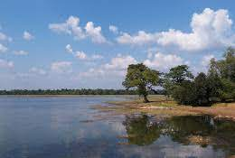

Lohara Lake
Lohara Lake
The village Lohara is located in Chandrapur Tahsil of Chandrapur District in the State of Maharashtra in India. It comes under Chandrapur Community Development Block. The nearest town is Chandrapur, which is about 7 kilometers away from Lohara.
About

According to Census 2011 information the location code or village code of Lohara village is 541284. Lohara village is located in Chandrapur tehsil of Chandrapur district in Maharashtra, India. It is situated 7km away from sub-district headquarter Chandrapur (tehsildar office) and 7km away from district headquarter Chandrapur. As per 2009 stats, Lohara village is also a gram panchayat. The total geographical area of village is 430.07 hectares. Lohara has a total population of 1,468 peoples, out of which male population is 740 while female population is 728. Literacy rate of lohara village is 67.85% out of which 76.08% males and 59.48% females are literate. There are about 402 houses in lohara village.